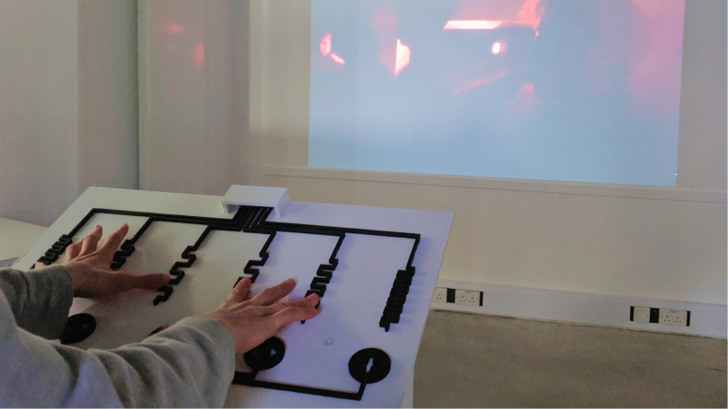

Opening the doors to rave culture through a journey of accessibility and shared experience.

Transience is an interactive art installation featuring an accessible physical interface crafted from conductive ink applied to a bespoke wooden MIDI controller. This tactile interface enables participants to engage with three video channels that showcase individual personas as case studies for the project's themes. Users can also compose their own music through six audio channels, generating soundscapes that blend seamlessly with the projected visuals. Designed to accommodate musicians of all skill levels, including novices, the interface empowers anyone to be the creator of their own live event.
Make rave culture more accessible, and celebrate the diverse people who make it what it is.
The installation you see today began as a mere exploration of the themes, driven by a shared interest with my creative partner, Aidan Peat, for the culture itself. Ideas quickly took root and evolved through a series of tests, all while remaining focused on our vision of making rave culture more accessible and celebrating its vibrant diversity.
As we engaged in this creative journey, we sought to design an immersive experience that authentically invites participants to connect with the culture. Our iterative process involved refining concepts, experimenting with materials and technologies, and gathering feedback from peers and potential users. This collaboration allowed us to craft an installation that reflects the fluidity of rave culture while empowering individuals to become active participants in their own creative journeys. Through Transience, we aim to inspire a deeper appreciation for this dynamic subculture and foster meaningful connections within its diverse community.
Transience and the associated body of work were part of my undergraduate degree in Interactive Design at the University of Lincoln, where I achieved a First Class with Honours.